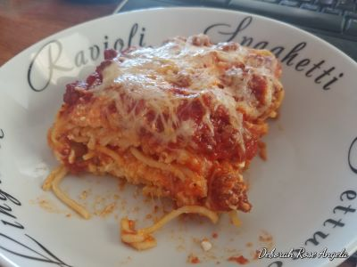

The Baked Spaghetti recipe

Description
Comforting baked spaghetti recipe with plenty of melted cheese — the perfect dish for potlucks, family
gatherings, or a weeknight dinner.
Baked spaghetti is the easy, comforting, and crowd-pleasing dinner you're looking for.
Baked Spaghetti ingredients
- Noodles: Of course, you'll need spaghetti noodles.
- Beef and onion: The meat sauce starts with a mixture of ground beef and
diced onion.
- Sauce: A jar of meatless spaghetti sauce is the convenient secret ingredient. You can use
homemade sauce if you want to go the
extra mile.
- Salt: Seasoned salt enhances the overall flavor.
- Eggs: Eggs lend moisture and help hold the baked spaghetti together.
- Cheeses: You'll need Parmesan, mozzarella, and cottage cheeses.
- Butter: Melted butter gives the dish extra richness.
Ingredients
- 1 (16 ounce) package spaghetti
- 1 pound ground beef
- 1 onion, chopped
- 1 (32 ounce) jar meatless spaghetti sauce
- ½ teaspoon seasoned salt
- 2 eggs
- ⅓ cup grated Parmesan cheese
- 5 tablespoons butter, melted
- 2 cups small curd cottage cheese
- 5 cups shredded mozzarella cheese, divided
Steps
- Preheat the oven to 350 degrees F (175 degrees C). Lightly grease a 9x13-inch baking dish.
- Bring a large pot of lightly salted water to a boil. Cook spaghetti in boiling water, stirring occasionally,
until tender but firm to the bite, about 12 minutes. Drain.
- Meanwhile, heat a large skillet over medium heat. Cook and stir beef and onion in the hot skillet until meat
is browned and onion is soft and translucent, about 5 to 7 minutes. Drain excess oil from the pan; stir in
spaghetti sauce and seasoned salt.
- Whisk eggs, Parmesan, and butter in a large bowl. Add spaghetti and toss to coat.
- Place 1/2 of the spaghetti mixture in the prepared baking dish. Top with 1/2 of the cottage cheese, 2 cups
mozzarella, and 1/2 of the meat sauce. Repeat layers. Cover with aluminum foil.
- Bake in the preheated oven for 40 minutes. Remove the foil and sprinkle with remaining 1 cup mozzarella.
Continue to bake until cheese is melted and lightly browned, 20 to 25 minutes.
← To main page